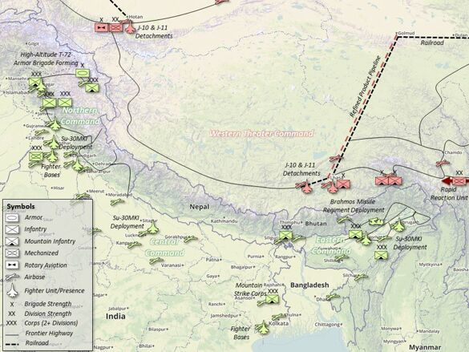
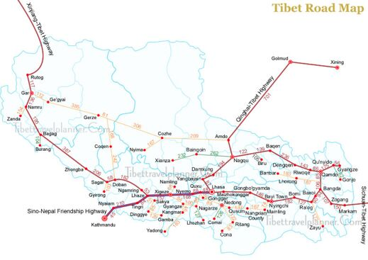
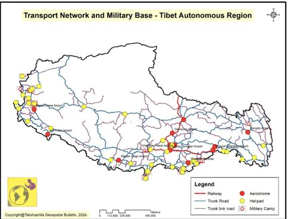

High Altitude, High Stakes: Military Posture and Escalation Dynamics along the Himalayan Frontier
Asia’s Uplands extend from Ladakh through Nepal, Sikkim, Bhutan, Arunachal Pradesh in India, Southwest China, Yunnan, the central region, and the all-critical Tibetan Plateau.
Asia’s Uplands extend from Ladakh through Nepal, Sikkim, Bhutan, Arunachal Pradesh in India, Southwest China, Yunnan, the central region, and the all-critical Tibetan Plateau. For centuries, the region commonly referred to as the ‘Roof of the World’ remained in geographical isolation, shrouded in mystery, with a strong, unique religious–political identity. The terrain along the Tibetan Plateau is treacherous and rugged, with high mountains ranging from 3500 to 6000 metres, sparsely populated with an estimated population of 14 million people, mainly concentrated along the eastern counties.
Tibet: Buffer Zone to Strategic Competition
Geography, Buddhism, and Chinese communist ideology drive and dictate the cultural landscape, strategic calculus, and the security environment in the Tibetan region. Geographically and historically a buffer zone between India and China, the two Asian giants, the Tibetan people and region have always aspired for and respected their autonomy and religious freedom. China’s planned and ruthless annexation of Tibet in the 1950s completely altered the strategic space, transforming a rich cultural zone, home to a peace-loving people, into a militarised and contested region. The Tibet Autonomous Region (TAR) is riddled with strategic competition and a disputed border between India and China, accentuated by an interplay among religion, culture, development, politics, and geography. It is imperative to examine the strategic importance, military deployment, and impact of infrastructural development on the region and people.
China is the proverbial bull in the China shop, with its ambition of territorial expansion, based on the strategy of Claim–Occupy–Legalise–Integrate and Exploit. The ‘One China Policy’ is China’s core national interest. After the occupation and integration of Tibet, it aims and plans to militarily take over Taiwan, the South China Sea, and Arunachal Pradesh (South Tibet), in its declared six wars in the next decade. The recent US-Israel war on Iran has further strengthened, possibly legalised, China’s aim to integrate its claimed areas militarily. Be as it may, India’s national interest is to ensure ‘Territorial Integrity’, especially along the 3488 km India-China border, and deter China’s aggressive behaviour.
China’s Strategy
In the Asian uplands, Chinese grand strategy is of ‘Palm and Five Fingers’, with Tibet as the palm and India’s Arunachal Pradesh, Sikkim, and Ladakh, with Nepal and Bhutan as the five fingers. India and China share a 3488 km-long disputed boundary. The contested border runs along India-TAR from Karakoram in the Northwest to Kibithu (or Kibithoo) in the Northeast. China occupies nearly 38,500 km2 of Indian territory in Eastern Ladakh, in addition to the 5125 km2 of Shaksgam Valley illegally ceded by Pakistan to China in 1963. China also claims over 90,000 km2 of India’s Arunachal Pradesh, which it alleges is an integral part of TAR, calling it ‘Zangnan’ — part of South Tibet. The 3488 km long India-China border is the longest disputed border in the world, and it was the most peaceful contested border for over four decades from October 1975 till the clash in Galwan in June 2020. The Chinese intrusions in Eastern Ladakh in April/May 2020 shattered the fragile peace and tranquillity based on the five agreements between India and China on border management. The intrusions are an indicator that China will not hesitate to employ military power to resolve the ‘Boundary Question’ on favourable terms, especially if it perceives India as weak at any given point of time. The intrusions also resulted in enhanced military deployment on either side of the Line of Actual Control (LAC). The militarisation of the LAC along the high altitude Tibetan Plateau is an ever-present and clear danger of conflict between two nuclear-armed nations, home to one third of humanity.
Line of Actual Control: Military Build Up
There is no common understanding of the LAC, which is a line of perceptions. There is an Indian perception of the LAC, then there is a Chinese perception of the LAC. To compound the confusion further, there is an Indian perception of the Chinese perception of the LAC and a Chinese perception of the Indian perception of the LAC. Despite these contradictions and confusion, the two sides have managed to maintain peace and tranquillity along the LAC. China’s 2020 intrusions along the LAC were countered by a proportional and commensurate military deployment. The many sensitive face-offs were managed by both sides without any escalation, based on established norms and standard operating procedures (SOPs). India’s operational philosophy along the LAC is one of ‘No Blinking No Brinkmanship’. It needs to be noted that in these high altitudes the temperatures are low, but tempers are high. It is to the credit of the troops, their discipline, SOPs, and established diplomatic and military structures that a sensitive situation was diffused, leading to de-escalation. However, the de-induction of troops has not taken place. The TAR, once a buffer zone, is now militarised, with two of the largest world militaries facing each other along the LAC.

Note: Units located via IHS Jane’s Database August 2016 does not include paramilitary units, People’s Armed Police (PAP), or infrastructure still under construction; Graphical construction superimposed on Google Maps.
Source: Rehman (2017).[1]
Infrastructure in the Tibet Autonomous Region
Historically, the region remained protected and isolated on account of its inaccessible rugged terrain with limited access through the high-altitude mountain passes. With the Chinese occupation of Tibet in the 1950s came the next phase of integration. China constructed a multi modal, multidimensional state of the art infrastructure. This includes a vast road and rail network, such as the Qinghai-Tibet railway line. A major road network was developed, consisting the Central, Eastern, and Western Highways, along with airfields, oil pipelines, logistic installations, and warehousing. This infrastructure has helped China to integrate Tibet more closely and has facilitated the settlement of Han majority in the region. Resultantly, the demographic patterns in this remote and generally hostile region have fundamentally changed. Massive camps and habitats were constructed to house the People’s Liberation Army (PLA) with the aim of controlling the Tibetan population and a build-up for war and military coercion against India, compressing mobilisation times.

Source: http://www.tibettravelplanner.com/road-map-tibet.htm
China is also building what it terms the ‘Great Wall of Villages’ along the LAC, presumably as the eyes and ears of the PLA for border management. But in effect, this also aims to change the age-old culture, traditions, and religious beliefs of the Tibetan people residing in these areas. The people on either side of the border have had strong ethnic, religious, and historical linkages for centuries.
India in a misplaced sense of security, did not develop any major infrastructure till 2005. The China Study Group (CSG) sanctioned 73 strategic roads in 2005, to be completed by 2012. However, because of various environmental issues, little or no progress was made on these projects. It is only after the 2020 intrusions in Eastern Ladakh that infrastructure development has been taken up on a war footing.

Note: Reprinted with permission from Takshila Institute.
Source: https://geospatialbulletin.takshashila.org.in/p/unlocking-tibet-in-depth-mapping
India’s military strategy against China has been one of ‘Dissuasive Defence’, building capabilities as a war prevention strategy. In July 2013, the Cabinet Committee on Security (CCS) sanctioned accretion forces of 90,270 personnel, constituting a Mountain Strike Corps along with combat support arms and services, to be raised over eight years at a cost of over ₹67,000 crore. Though sanctioned, the additional budget was not allocated, thus causing delays. The impetus to the raising of formations has now been accorded as India builds up the requisite and effective military capabilities along the LAC to thwart China’s aggressive behaviour.
India’s Strategy
India’s challenge is to deter ‘China’s Aggressive Behaviour’, which requires a comprehensive ‘4 D strategy.
- One — Defend the LAC.
- Two — Dominate Sea Lanes of Communications, particularly at choke points in the Indian Ocean such as the Malacca Strait. The Malacca Strait is a strategic concern and vulnerability for China since80% of its oil imports transit through the Strait.
- Three — Deft Diplomacy ‘Bind to Balance’ with nations where we have convergence and congruence of interests, such as QUAD.
- Four — Deny space to China in the neighbourhood. Mitigate China’s aim of isolating India as part of its ‘String of Pearls’ strategy.
China has three ‘T ‘sensitivities — Tibet, Taiwan, and East Turkestan (Xinjiang Uyghur Autonomous Region). It is imperative for India to extend moral and material support to the people of Tibet and their cause for autonomy.
Militarily, India must seek ‘Peace through Preparedness’ while keeping its powder dry. For far too long, China has been considered a long-term threat; this has now changed as China knocks at our doorstep. India will need to invest in military capabilities to deter China’s aggressiveness. China respects strength; India needs to build capabilities and enhance its capacities to ensure peace.
Footnotes
- Rehman, Iskander (2017). “Hard Men in a Hard Environment: Indian Special Operations along the border with China”, at https://warontherocks.com/hard-men-in-a-hard-environment-indian-special-operators-along-the-border-with-china/